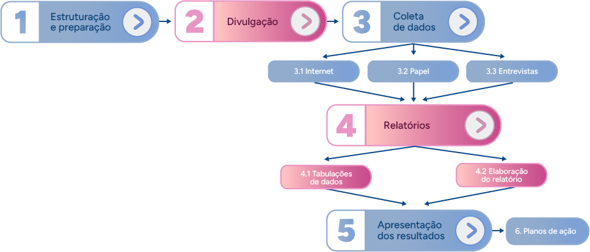

Clima organizacional e liderança
Introdução
A liderança organizacional diz respeito ao processo de influenciar e manter os membros de uma organização engajados e motivados para atingir objetivos estabelecidos. Ela envolve a capacidade de guiar, inspirar, coordenar e orientar os esforços individuais e coletivos em direção aos objetivos da organização. A liderança organizacional pode assumir várias formas, que vão desde líderes formais, como gerentes e diretores, até mesmo líderes informais, como membros de equipes que influenciam seus colegas. Para Chiavenato:
A liderança é necessária em todos os tipos de organização humana, seja nas empresas, seja em cada um de seus departamentos. Ela é essencial em todas as funções da Administração: o administrador precisa conhecer a natureza humana e saber conduzir as pessoas, isto é, liderar (Chiavenato, 2004, p. 18 -19).
Já o clima organizacional atinge o ambiente psicológico e social que existe em uma organização. Ele reflete as percepções, as atitudes e os sentimentos dos funcionários em relação à cultura, às políticas, às práticas, aos procedimentos e à estrutura da organização. O clima organizacional tende a influenciar significativamente o desempenho dos funcionários, sua satisfação no trabalho, a motivação, o comprometimento organizacional e até mesmo a retenção de talentos.
A seguir, assista a um exemplo de como um colaborador pode ser bem acolhido em seu primeiro dia de trabalho, em uma nova organização, percebendo o clima positivo que existe na nova empresa.
Clique ou toque no botão de play para ouvir o podcast ou no de transcrição para visualizar o conteúdo.
Diante dessas premissas, a relação entre clima e liderança organizacional é bastante significativa para o sucesso de uma organização. Líderes eficazes têm a capacidade de moldar o clima organizacional por meio de suas ações, comportamentos e comunicação. Um líder que demonstra empatia, comunica-se de forma clara, incentiva a colaboração e reconhece o desempenho dos funcionários pode contribuir para um clima organizacional positivo. Por outro lado, líderes que são autocráticos, insensíveis às necessidades dos funcionários ou incapazes de inspirar confiança podem criar um clima organizacional negativo, caracterizado por baixa moral, desconfiança e falta de motivação.
Os estilos de liderança e o impacto no clima organizacional
Conforme mencionado, o clima e a liderança organizacional se interligam e têm um impacto importante no sucesso ou insucesso de uma organização. As lideranças devem estar atentas ao clima organizacional e trabalhar ativamente para promover um ambiente de trabalho positivo e produtivo.
Vários tipos de líderes podem emergir em uma organização, cada um com suas próprias características, estilo de liderança e abordagens para influenciar e orientar os membros da equipe. Sendo assim, a seguir, conheça alguns dos mais populares estilos de liderança presentes no mundo do trabalho.
Clique ou toque para visualizar o conteúdo.
Os gestores que buscam o sucesso de suas organizações precisam estar atentos aos estilos de liderança. Liderança inadequada ou ineficaz pode resultar em um clima organizacional negativo, caracterizado por falta de confiança, comunicação deficiente, desmotivação, conflitos e baixo engajamento. Portanto, é essencial que os líderes estejam cientes do impacto de suas ações no clima organizacional e trabalhem ativamente para promover um clima de trabalho que incentive o crescimento, a inovação e o bem-estar de todos.
Qual é o melhor estilo de liderança a ser seguido por uma equipe?
Primeiramente, é preciso entender que cada equipe e cada situação tem sua particularidade e necessidade de lideranças distintas. O líder precisa conseguir ler a equipe e a situação e, então, utilizar o estilo adequado para conduzir as pessoas para os resultados necessários. Em uma equipe com pessoas automotivadas e maduras, o líder poderá fazer uso preponderante do estilo de liderança liberal, por exemplo.
Em termos estratégicos, ou seja, conforme os valores de cada organização, diferentes estilos de liderança são incentivados. Cada empresa deve estar sempre atenta e capacitar os líderes para mudar quando necessário, a fim de manter um clima organizacional saudável.
Competências do bom líder
Independentemente do estilo de liderança, um bom líder deve ter uma variedade de competências, que são essenciais para inspirar, motivar e guiar sua equipe. Esse deve ser seu foco constante em busca dos objetivos organizacionais. Em relação ao aspecto competências, podem ser citadas as habilidades mais conhecidas pela sigla CHA: Conhecimentos, Habilidades e Atitudes.
Competência = conhecimento + habilidade + atitude
A competência é a habilidade de saber, saber fazer e saber agir. É a capacidade de articular e mobilizar os conhecimentos com habilidade e atitudes adequadas na atuação profissional diária.
Clique ou toque para visualizar o conteúdo.
O conhecimento é o saber teórico. Por exemplo, um líder sabe português, mas para esse conhecimento contribuir para uma competência, é necessário que o líder consiga transformar dados em informações e aplicá-las na obtenção de resultados. Assim, o líder precisa saber português e conseguir redigir um e-mail sem erros.
A habilidade é o saber fazer algo com agilidade e qualidade. É colocar o conhecimento em prática. O líder, além de saber português e conseguir redigir um e-mail sem erros, ele escreve diversos tipos de documento nas normas da língua, sem muito esforço, bem como se expressa verbalmente de forma adequada com facilidade, ou seja, é hábil com a língua portuguesa.
A atitude é o resultado do que o líder é, ou seja, do que ele sente e pensa. É agir assertivamente. Para saber agir, não basta apenas sentir, tampouco agir, é necessário articular ambos e escolher como agir e ter atitudes assertivas. Por exemplo, o líder sabe português, domina habilmente a linguagem escrita e verbal em português e consegue pensar antes de responder a um e-mail indelicado recebido de um cliente descontente. Sentiu (sentir) um desconforto ao lê-lo, pensou (pensar) como seria mais adequado responder e escreveu (atitude assertiva) um e-mail educado, porém firme.
Como surgem as competências? Como se desenvolvem?
Cada líder terá algumas competências mais desenvolvidas e outras menos desenvolvidas. Haverá colaboradores/gestores com competência para trabalhar sozinhos e outros em equipe, por exemplo. Tem crescido muito o investimento da área de gestão de pessoas no desenvolvimento das competências, principalmente no que tange à atitude. Esse desenvolvimento se dá por meio de palestras, capacitações e treinamento, mas dependem, em grande medida, do empenho da própria pessoa em autoconhecimento e vontade de crescer emocionalmente (sentir). Alguns pensadores agregam ao CHA mais dois fatores importantes, conforme a seguir.
Clique ou toque para visualizar o conteúdo.
Valores
As empresas e os indivíduos sentem-se cada vez mais responsáveis pelo futuro e com a sustentabilidade do planeta. Logo, por quais meios e de que forma os resultados devem e são alcançados? Com respeito ao meio ambiente, com desenvolvimento de uma sociedade mais igualitária e humana. O profissional competente precisa ter valores e produzir, conviver e ser cidadão com ética e responsabilidade.
Entorno
É o ambiente no qual a competência encontra as condições para se desenvolver, faz referência ao ambiente externo à pessoa que daria as possibilidades para o desenvolvimento do saber conviver. Alguns autores consideram, ainda, as emoções, ou seja, o saber ser pelo desenvolvimento da inteligência emocional. Nesse caso, a inteligência emocional é o ambiente interno e subjetivo da pessoa, que dá base para ela saber (ou não) conviver. Pode-se integrar os dois elementos para que a pessoa desenvolva o saber conviver: o fator externo, que é o ambiente, e o fator interno, que são as emoções.
Conheça algumas das principais competências de um bom líder na atualidade.
Clique ou toque para visualizar o conteúdo.
Essas são apenas algumas das competências que são importantes para um líder eficaz. Note que as habilidades de liderança podem ser desenvolvidas e aprimoradas ao longo do tempo, por meio de educação, experiência e, ainda, prática contínua. Nesse processo, a área de recursos humanos se torna fundamental.
Trabalho em equipe
Trabalhar em equipe traz uma série de ganhos significativos para uma organização. A colaboração entre membros da equipe promove a troca de ideias e experiências, resultando em uma tomada de decisão mais robusta e informada. A diversidade de perspectivas e habilidades dentro da equipe estimula a criatividade e a inovação, levando a soluções mais eficazes e criativas para os desafios organizacionais. Além disso, a distribuição de tarefas de acordo com as habilidades individuais dos membros da equipe pode aumentar a eficiência e a produtividade geral.
Um ambiente de trabalho colaborativo e positivo também contribui para a satisfação e o engajamento dos funcionários, resultando em maior motivação e bem-estar no trabalho.
Além disso, trabalhar em equipe proporciona oportunidades de aprendizado e desenvolvimento, em que os membros podem compartilhar conhecimentos e experiências uns com os outros, promovendo o crescimento profissional de todos os envolvidos. Em suma, uma cultura de trabalho em equipe não apenas beneficia os indivíduos, mas também impulsiona o sucesso e a competitividade da organização como um todo.
A necessidade de um clima organizacional saudável aliado à qualidade de vida no trabalho exige das empresas, atualmente, que seus times sejam formados por equipes, e não mais apenas por grupos de trabalho.
Como distinguir grupos e equipes?
Ao contrário do que muitas pessoas pensam, grupo não é a mesma coisa que equipe.
Grupo
É a união de duas ou mais pessoas que interagem com as outras e dividem algumas tarefas, visando a objetivos inter-relacionados.
Equipe
É um tipo de grupo, mas com três propriedades específicas:
- As ações dos indivíduos são interdependentes e coordenadas.
- Cada membro tem um papel específico determinado.
- As tarefas têm o mesmo objetivo.
Fonte: Senac EAD (2025)
Diferenciais entre grupo e equipe. Em grupo, em relação a metas, sinergia e responsabilidade, há as seguintes características: compartilhamento da informação; neutro, às vezes, negativo; individual; aleatório e variado. Em equipe, em relação a metas, sinergia e responsabilidade, há as seguintes características: desempenho coletivo; positivo; individual e mútuo; complementar.
Um grupo transforma-se em equipe quando incorpora em seu funcionamento as habilidades de resolução de problemas e a troca de experiências múltiplas. Além disso, as pessoas se unem em um esforço coordenado para produção/execução do trabalho e se unem também para uma interação maior entre todos. Equipes são capazes de melhorar o desempenho dos indivíduos por sua maior interação.
Mas como trabalhar em equipe?
O trabalho em equipe proporciona a oportunidade de socialização, aprendizado e crescimento dos componentes. É necessário que o líder e a área de recursos humanos invistam no desenvolvimento e no crescimento dos indivíduos para que o grupo caminhe para se tornar uma equipe. Nesse processo, um dos principais aspectos é o aprendizado sobre as diferenças, afinal o grupo é formado, inevitavelmente, por pessoas diferentes, com opiniões diferentes, visões de mundo diferentes, níveis de inteligência emocional diferentes, e assim por diante.
Quando o grupo se torna equipe, as diferenças passam a ser respeitadas e, mais do que isso, as pessoas conseguem aproveitar as diferenças para promover enriquecimento de ideias, inovação, encontrar falhas e propor soluções.
Saber aceitar, respeitar e lidar com as diferenças, ou seja, saber utilizá-las em benefício da execução satisfatória das tarefas é indispensável para que o trabalho em equipe seja bem-sucedido.
Agora, chegou a hora de praticar.
Identifique e relacione corretamente cada uma das descrições com suas respectivas habilidades essenciais para o trabalho em equipe.
Habilidades essenciais para trabalho em equipe
Escuta ativa
Comunicação assertiva
Comprometimento
Confiança
Visão sistêmica


Outras habilidades que não sejam para trabalho em equipe
-
Autodisciplina
É a habilidade capaz de controlar seus impulsos, emoções e comportamentos. -
Autonomia
É a capacidade de agir de forma independente, tomando decisões, agindo e assumindo responsabilidades por si mesmo.
O trabalho em equipe permite resultados mais eficientes do que as atividades realizadas individualmente. Assim, as organizações passaram a estimular a união e a formação de equipes como estratégia para aprimorar a efetividade do trabalho e aumentar a satisfação dos colaboradores. A chave para integrar as equipes e resolver (ou até mesmo evitar) conflitos é a comunicação. O líder deve manter um contato próximo com todos os envolvidos, atentar-se às atividades de cada um deles, bem como às dificuldades expostas. Muitos conflitos podem ser evitados com uma simples conversa "olho no olho" e boa capacidade de escuta entre líder e liderado.
Motivação
Quando os funcionários estão motivados, eles demonstram maior engajamento, produtividade e satisfação no trabalho. A motivação pode ser impulsionada por uma variedade de fatores, incluindo reconhecimento, oportunidades de desenvolvimento profissional, um ambiente de trabalho positivo, desafios estimulantes e um propósito claro e significativo no trabalho.
Esse é um papel essencial de líderes e gestores, oferecendo apoio, feedback construtivo e reconhecimento pelo bom desempenho.
Pode-se dizer que motivação é o que faz você querer, o que o faz agir em qualquer situação, e isso pode ser em dois sentidos: no de obter prazer ou evitar a dor. A motivação é o motivo para a ação, seja para ter prazer, seja para evitar a dor. E isso é algo individual: apenas a pessoa consigo própria pode saber realmente o que a motiva diariamente.
É possível partir da premissa de que a motivação é determinada por um impulso no sentido de satisfazer necessidades e sentir prazer, e uma vez que a necessidade tenha sido satisfeita, ela não mais determina o comportamento (ao menos até que a necessidade apareça novamente).
Para entender melhor, pense sobre quando você está com fome.
Movido pela necessidade de se alimentar, você se motiva a cozinhar ou ir a um restaurante.
Um exemplo de motivação para evitar a dor poderia ser ficar desempregado.
Imagine a situação: a pessoa está trabalhando em um lugar que não gosta, mas, para evitar ficar desempregada, ela se motiva a seguir levantando todos os dias.
As necessidades atuam sempre em conjunto, prevalecendo a mais elevada, desde que as inferiores estejam satisfeitas. A hierarquia das necessidades humanas é dividida em cinco classes, para que possam ser colocadas em ordem conforme seu grau de importância. A pirâmide de Maslow é mundialmente conhecida. Ela defende a ideia de que a motivação de um sujeito está baseada nas necessidades distribuídas na pirâmide. Conheça essas necessidades de forma mais detalhada.
Clique ou toque para visualizar o conteúdo.
Para entender melhor essa hierarquia das necessidades, reflita sobre o exemplo anterior. A pessoa que se motiva a ir trabalhar mesmo insatisfeita está buscando evitar a dor de ficar desempregada, mantendo atendida a necessidade de segurança e, detalhe, a necessidade fisiológica também atendida, pois é hierarquicamente inferior à necessidade de segurança (vide a pirâmide). Agora, suponha que se passaram meses e ela está tendo problemas de saúde em decorrência desse trabalho. O que acontece? Ela se motivará a resolver seus problemas de saúde? Ou seja, é uma busca por prazer/bem-estar, que, nesse caso, se dará pela busca de tratamento para sua saúde física e emocional. Então pode ser que agora ela consiga iniciar sua busca por outro emprego, pois a necessidade de segurança já não é tão importante quanto sua necessidade fisiológica.
O investimento em motivação e realização profissional dos colaboradores garante maior produtividade e eficiência no trabalho. Cabe às áreas de gestão (lideranças) e recursos humanos identificar em qual ponto da carreira o colaborador está e qual é a sua atual necessidade.
Em última análise, investir na motivação dos funcionários não apenas melhora o clima organizacional, mas também impulsiona a produtividade, a inovação e o sucesso a longo prazo da organização.
O grande desafio dos gestores é olhar as pessoas como seres humanos, e não apenas como recursos organizacionais. Um ingrediente vital para o sucesso de uma organização consiste em saber o que realmente motiva as pessoas.
Acompanhamento do clima organizacional
O clima organizacional é considerado o principal indicador para medir o grau de satisfação dos colaboradores nas empresas na contemporaneidade. Está ligado diretamente à cultura e à realidade da empresa nos aspectos que influenciam o bem-estar das pessoas, como tipo de liderança, valorização profissional, políticas de RH, entre outros.
As organizações modernas têm investido em analisar e medir a percepção dos funcionários sobre o clima organizacional, ou seja, sobre o grau de satisfação em relação à empresa, de modo constante. Dessa forma, atuam para proporcionar um ambiente agradável, que facilite o relacionamento interpessoal, melhorando o desempenho e a produtividade das pessoas. Ao adotar ações em relação ao ambiente, as empresas conseguem minimizar os riscos com afastamentos por motivos de doenças, bem como evitar acidentes de trabalho.
É importante que o RH realize avaliações do clima organizacional para medir a satisfação dos colaboradores em relação a aspectos como a cultura da empresa, as políticas de recursos humanos, o modelo de gestão, a missão, o processo de valorização e motivação profissional e a identificação com a empresa.
Para entender melhor quais são os aspectos que influenciam e determinam o clima organizacional, observe sua divisão em quatro dimensões:
| Resistência à mudança | Liderança |
|---|---|
|
Relacionamento com as mudanças Maior ou menor cooperação ou resistência dos colaboradores em mudanças no ambiente organizacional, desde alteração de regras a processos inteiros. |
Relacionamento com o líder/colaborador Maior ou menor habilidade dos líderes em administrar pessoas e desenvolver a organização de forma eficaz e eficiente. |
| Estresse | Motivação |
|
Relacionamento com as ações do dia a dia Analisa o grau da capacidade das equipes e dos líderes de amenizar as situações de estresse, por meio de ações que visem ao bem-estar das pessoas. |
Relacionamento interpessoal Analisa o grau de impulso e disposição interna das pessoas a favor das metas da organização em conjunto com a satisfação de necessidades individuais (reconhecimento, produtividade, retorno financeiro, segurança de atendimento das necessidades básicas). |
Fonte: Senac EAD (2025)
De acordo com o quadro, pode-se perceber que quanto maior a cooperação, as habilidades dos líderes, o manejo com situações de estresse, a capacidade do RH de analisar e buscar desenvolver as pessoas e suas competências interpessoais, mais agradável tenderá a ser o clima organizacional.
Clique ou toque no botão de “+” para visualizar o conteúdo.
Saiba + GPTW
A GPTW, ou Great Place to Work, é uma consultoria mundialmente conhecida, que certifica empresas que criam ambientes de trabalho excepcionais. Essa certificação é baseada em uma pesquisa de clima organizacional realizada com os colaboradores das empresas. A pesquisa em questão avalia diversos aspectos, como confiança, orgulho, entre outros. Empresas que recebem a certificação GPTW demonstram altos níveis de satisfação dos funcionários e uma cultura empresarial positiva. Além disso, a certificação é vista como um indicador de excelência na gestão de pessoas e pode ser usada como ferramenta de marketing e atração de talentos. As organizações certificadas pelo GPTW são consideradas destinos de trabalho desejáveis, o que pode resultar em vantagens competitivas no mercado. Conheça o site da empresa e acompanhe mais conteúdos acerca desse tema: https://gptw.com.br/.
Pesquisa de Clima Organizacional (PCO)
A pesquisa é um instrumento voltado à análise do ambiente interno das organizações, conforme o levantamento de suas necessidades, tendo como objetivo demonstrar os pontos críticos que configuram o clima, identificando pontos fortes, pontos fracos ou deficiências da organização, bem como expectativas e aspirações dos colaboradores.
Por meio da análise dos resultados da pesquisa de clima, as empresas podem implementar ações e estratégias para fortalecer os pontos positivos, resolver problemas identificados e criar um ambiente de trabalho que favoreça o desenvolvimento pessoal e profissional dos colaboradores.
Parâmetros
A melhor forma de se medir o clima organizacional de uma empresa será pela realização de uma "Pesquisa de clima organizacional". É o meio mais eficaz para se entender o que os colaboradores querem, o que esperam e por que continuam na empresa. Deve ser aplicada com frequência anual ou semestral. Observe os principais objetivos para a realização de uma pesquisa de clima, por tópicos.
- Avaliar o grau de satisfação dos funcionários em relação à empresa (esse é o objetivo mais usual).
- Avaliar o grau de satisfação dos funcionários, decorrente do impacto de algumas mudanças ocorridas em determinado ano ou semestre.
- Avaliar o grau de disseminação de determinados valores culturais entre os funcionários, por exemplo: o quanto se sentem valorizados na organização.
A aplicação da pesquisa necessita respeitar certas regras para que seja efetiva, ou seja, para que o RH consiga entender como os funcionários estão se sentindo e o que precisa ser melhorado. As principais regras são:
- Informar o público-alvo (colaboradores) que será realizada uma pesquisa, ou seja, deve-se investir na divulgação por todos os canais de comunicação da empresa (e-mail, intranet, mural etc.).
- É fundamental incentivar a participação de todos – afinal, quanto mais pessoas participarem da pesquisa, mais a empresa poderá entender o que as pessoas pensam e percebem do clima.
- Participação do corpo executivo e dos gestores nesse processo, tanto para divulgar ao maior número de participantes, como no engajamento para realizar ações de melhoria do clima, após o levantamento das respostas e a identificação dos pontos fracos.
- Contratar uma consultoria externa para conduzir o processo, pois assim os colaboradores sentirão maior segurança para responder às questões e apontar debilidades dos líderes e da organização, confiando mais no anonimato das respostas e em todo o processo da pesquisa de clima.
Como funciona o processo de realização de pesquisa de clima?
1. As pesquisas de clima são realizadas por meio da aplicação de questionário on-line (modelo mais utilizado).
2. É fornecido um certo período de tempo para os colaboradores responderem à pesquisa.
3. Após a aplicação do questionário, a empresa contratada ou o RH faz a análise de resultados da pesquisa de clima, evidenciando os pontos fortes e fracos da empresa.
4. Em seguida, o RH deve apresentar os resultados da pesquisa para todos os colaboradores.
As empresas mais modernas realizam reuniões para pensar ações de melhoria ou ajustamento dos pontos fracos juntamente com colaboradores e líderes. É por isso que, com a pesquisa de clima, se consegue identificar oportunidades, prever crises, investir em treinamento e prever uma série de melhorias. Para que a empresa tenha sucesso na aplicação da pesquisa de clima organizacional, são necessários os seguintes pontos: construir um processo com credibilidade, sigilo nas respostas e confiança dos colaboradores. Não existe uma pesquisa de clima padrão. Cada empresa adapta o questionário a sua realidade, linguagem e cultura de seus funcionários.
Periodicidade
Em relação à periodicidade de realização da PCO nas empresas, para que tenham subsídios e possam, por meio dos resultados, monitorar o clima organizacional, definindo planos de ação com processos de melhorias para o ambiente e a qualidade de vida dos colaboradores, veja alguns problemas que indicam a necessidade da aplicação de uma PCO nas organizações:
- Alta rotatividade de funcionários.
- Absenteísmo.
- Elevados índices de adoecimento.
- Desperdícios.
- Elevados índices de acidentes de trabalho.
- Falta de funcionários comprometidos e indiferentes à empresa.
- Falta de motivação da equipe de trabalho.
- Conhecer quais são os fatores que estão afetando negativamente a empresa.
- Elevados índices de conflitos organizacionais.
Você conseguiu perceber? Com a realização da PCO, as empresas conseguem:
- Gerar uma base de dados que permite, de forma detalhada, construir planos de ação, com o intuito de tornar o clima interno mais satisfatório.
- Ao executar as ações desse plano, a empresa aumenta sua produtividade, diminui a rotatividade e cria um ambiente de trabalho seguro, além disso, acaba elevando o índice de motivação dos colaboradores.
A efetividade dos planos de ação dependerá do quanto a empresa estará preparada para investir na gestão do clima organizacional, e é papel do RH promover o engajamento dos líderes para que as melhorias aconteçam e o clima melhore. Além dos benefícios citados, com a execução de ações para sanar os pontos fracos apresentados pelos colaboradores na PCO, a organização pode evitar problemas como desperdícios, absenteísmo, conflitos no trabalho, desmotivação e, até mesmo, a inspiração de equipes de alta performance e um ambiente favorável para os processos de inovação.
As oportunidades existentes no mundo globalizado são muitas, entretanto, também são grandes as dificuldades encontradas, em que a retenção de profissionais qualificados e sua motivação por meio do estabelecimento de um bom clima organizacional pode ser um dos maiores desafios para as organizações.
Processos de elaboração
Para que consigam atingir os resultados e continuar no mercado, as empresas modernas necessitam entender o clima organizacional como um diferencial competitivo para satisfação interna, oferecendo aos seus colaboradores não apenas uma remuneração atraente, mas sim um diferencial maior, com um ambiente de trabalho que proporcione crescimento e desenvolvimento, alinhado à qualidade de vida. A pesquisa de clima pode utilizar diferentes metodologias, de acordo com as necessidades de cada empresa, por exemplo:
- Aplicação de questionários
- Grupos focais
- Entrevistas
Acompanhe as etapas pelas quais a PCO precisa passar:
Clique ou toque para visualizar o conteúdo.
Detalhamento das etapas para a elaboração da PCO
Confira a seguir um recurso que poderia ser utilizado para realização da pesquisa de clima na sua organização.
Clique ou toque sobre a tela para assistir ao vídeo.
Estratégias para engajar os colaboradores na pesquisa de clima
Clique ou toque para visualizar o conteúdo.
Explique claramente a importância da pesquisa, destacando como as respostas dos colaboradores ajudarão a melhorar o ambiente de trabalho.
Assegure aos colaboradores que suas respostas serão anônimas e confidenciais, incentivando-os a compartilhar abertamente suas opiniões e preocupações.
Peça o apoio de líderes e gestores para promover a importância da pesquisa e incentivar a participação de suas equipes.
Torne o processo de participação simples e acessível, fornecendo múltiplos canais de comunicação, como e-mails, intranet, aplicativos móveis, entre outros.
Defina um prazo para a conclusão da pesquisa e lembre os colaboradores regularmente da data-limite.
Compartilhe os insights de pesquisas anteriores e as medidas tomadas com base nelas para demonstrar o impacto positivo da participação dos colaboradores.
Reconheça a diversidade dentro da organização e adapte a comunicação e os incentivos de acordo com as preferências e as necessidades dos diferentes grupos de colaboradores.
Após a conclusão da pesquisa, comprometa-se a compartilhar os resultados de forma transparente e implementar medidas para abordar as áreas de melhoria identificadas.
Agradeça sinceramente os colaboradores pela participação deles e destaque como as contribuições são valorizadas e fundamentais para o crescimento e o sucesso da empresa.
Aplicação e instrumentos
Se a pesquisa não for bem conduzida e bem aplicada, poderá apresentar resultados contrários aos esperados. É crucial ter atenção quanto à adesão na participação, que deve ser conquistada, e não coagida. Não existe obrigatoriedade de realização, caso algum colaborador não se sinta à vontade para participar.
Quanto maior for o número de funcionários que aderirem à pesquisa, mais assertiva ela será, proporcionando um diagnóstico preciso em relação ao reflexo da realidade da empresa.
Por esse motivo, durante o processo de comunicação da pesquisa de clima, o RH deve esclarecer e frisar a importância da participação de todos, deixando claro o quanto esse momento será impactante para a melhoria do clima interno da empresa. Os meios de comunicação interna a serem utilizados nessa etapa do processo devem atingir todos os colaboradores, com informações precisas, prazos definidos e objetivos justificados.
A intenção da pesquisa de clima organizacional não é agradar, pelo contrário, é revelar o que está acontecendo e o que ainda precisa ser feito em relação ao clima interno da organização. Para conseguir um maior engajamento por parte dos colaboradores, é preciso usar a confiança como principal elemento para a resolução de conflitos durante a realização, fazendo o colaborador acreditar que ela proporcionará melhorias e que ele não será identificado nem prejudicado por dizer o que pensa, preservando sua identidade e gerando os resultados desejados por meio da colaboração e do envolvimento de todas as partes. Para aplicar a pesquisa, deverão ser levados em consideração os seguintes itens: a realidade da empresa, se todos os colaboradores têm acesso à internet ou se deverá ser realizada no papel, devendo ser observado se todos dominam o uso da internet ou se necessitam de um treinamento prévio.
A seguir, veja um quadro resumindo os sete passos que envolvem a aplicação de uma pesquisa de clima organizacional:
| 1. Comunicação | Faça uma campanha interna esclarecendo para que serve uma pesquisa de clima organizacional e de que forma ela ajuda o ambiente empresarial. |
| 2. Segurança | Ressalte o sigilo absoluto, a transparência dos resultados e a imparcialidade do pesquisador, oferecendo segurança a quem participa. |
| 3. Sensibilização | Reúna a equipe de gestores, destaque o incentivo, mas não a coação de funcionários: ninguém é obrigado a participar, pois isso tira a credibilidade da pesquisa. Também reúna os colaboradores e fale sobre os benefícios da participação de todos, resultando em um ambiente de trabalho melhor. |
| 4. Cronograma | Uma pesquisa de clima organizacional não precisa, necessariamente, ser feita no mesmo dia. Defina em torno de 15 dias que não afetem a rotina de sua empresa, para que todos consigam tirar um tempo para responder à pesquisa. |
| 5. Sentido | Esclareça os objetivos: identificar o ambiente interno da empresa, que seja um ambiente de trabalho estimulante e satisfatório. |
| 6. Particularidades | Cada empresa deve elaborar a pesquisa considerando sua missão, visão e valores, bem como sua cultura própria. |
| 7. Apresentação dos resultados | Após o levantamento de todas as respostas, os resultados devem ser apresentados e divulgados para todos, independentemente de participação ou não. Evidencie, também, o plano de ação da empresa com os pontos a melhorar e o que será feito a partir desse momento. |
Fonte: Adaptado de Luz (2003)
Antes de definir os instrumentos, você conhecerá os modelos existentes de PCO. Existem quatro principais modelos de pesquisa de clima organizacional. No quadro a seguir, estão os principais aspectos analisados na pesquisa de satisfação de cada modelo.
Clique ou toque para visualizar o conteúdo.
É possível destacar os instrumentos mais usados pelas empresas para a aplicação das pesquisas:
| Questionário | Entrevistas | Painel de debates |
|---|---|---|
|
|
|
As formas de controle e acompanhamento de desempenho podem afetar o clima organizacional, por isso a importância do acompanhamento e do desempenho de forma transparente e com critérios previamente conhecidos.
Como é uma PCO na prática?
Você já conhece as metodologias e os instrumentos que podem auxiliar na construção e na aplicação da PCO, agora confira alguns exemplos de perguntas mais utilizadas nos questionários, para compreender como são elaboradas:
- Você sempre recebe as informações que necessita para fazer seu trabalho?
- Você acredita que terá oportunidades de crescimento nesta empresa?
- Você é incentivado a contribuir para a melhoria dos processos de trabalho?
- Seu trabalho propicia aprender sempre coisas novas?
- Os esclarecimentos e as orientações de seus superiores sobre suas tarefas ajudam a realizar seu trabalho?
- A empresa oferece oportunidades de treinamento para todos?
- O ambiente da empresa facilita o relacionamento entre os colaboradores?
- Todos os colaboradores são envolvidos na tomada de decisão?
- Você acredita que o tempo que usa em sua jornada de trabalho é suficiente para cumprir suas tarefas e obrigações?
- Você considera que seu trabalho é importante para a empresa atingir seus objetivos?
- Você sente que trabalhar nesta empresa contribui para melhorar sua vida?
- Você conhece os objetivos desta empresa?
Esses são alguns exemplos de perguntas, no entanto, o mais adequado às empresas é que as pesquisas sejam desenvolvidas, aplicadas e interpretadas por profissionais experientes da área de RH ou por consultores especializados, por meio da contratação da prestação de serviços. Após aplicação da PCO, vem a etapa de análise e tabulação dos dados, que é de grande relevância durante esse processo.
Tabulação dos dados da pesquisa de clima organizacional
Essa etapa tem como objetivo a tabulação dos dados, seja de forma manual ou informatizada. A tabulação serve para calcular o percentual dos funcionários satisfeitos em relação às diferentes variáveis pesquisadas.
A tabulação manual de uma pesquisa realizada com um número grande de pessoas é cansativa e trabalhosa. Por esse motivo, é indicado o uso de uma ferramenta para o processo.
Existem várias ferramentas disponíveis para a tabulação dos dados de uma pesquisa de clima organizacional, desde softwares especializados até planilhas eletrônicas. Aqui estão algumas opções comuns:
Clique ou toque para visualizar o conteúdo.
Existem outras possibilidades de ferramentas disponíveis, mas sua escolha depende das necessidades específicas da organização, do volume de dados e das preferências da equipe responsável pela análise da pesquisa de clima organizacional.
Devolutiva dos resultados da pesquisa de clima organizacional
Como última etapa do processo de aplicação da PCO, há a devolutiva, o momento em que o RH apresenta quais foram os pontos identificados e qual o plano de ações pensado para melhorar o ambiente. As empresas devem observar e considerar as percepções dos colaboradores, inclusive na criação do plano de ações.
O RH pode fazer duas devolutivas: uma com os gestores para que possam compreender melhor o que acontece à sua volta, favorecendo a comunicação e a interação entre RH e gestores nas resoluções dos problemas, e outra com todos os colaboradores, para apresentar os resultados da PCO e o plano de ações e/ou propor ações e construir junto com os funcionários outras ações.
É comum, na devolutiva com os gestores, aparecer a necessidade de capacitações para o desenvolvimento das lideranças, incluindo a importância do fortalecimento da prática de feedback em suas rotinas diárias, e não somente no momento da avaliação de desempenho. A etapa da devolutiva, no processo da PCO, é essencial para que seja um instrumento eficaz e efetivo em cada empresa. O comprometimento e a seriedade com que o RH realizará e conduzirá a devolutiva é essencial para a confiança dos colaboradores na PCO e na organização.

Você sabia?
As empresas modernas que acompanham os movimentos no mundo do trabalho estão atentas à segurança psicológica de seus colaboradores. A segurança psicológica em uma organização refere-se ao ambiente em que os colaboradores se sentem seguros para expressar suas opiniões, ideias, preocupações e, até mesmo, cometer erros sem medo de represálias ou julgamentos negativos. É um conceito que enfatiza a confiança, o respeito e a abertura dentro da equipe e da empresa como um todo. Em um ambiente com alta segurança psicológica, os colaboradores se sentem encorajados a assumir riscos, colaborar de forma significativa, serem autênticos e criativos. Isso promove a inovação, a resolução de problemas eficaz, o trabalho em equipe e o bem-estar geral dos colaboradores. Líderes desempenham um papel fundamental na criação e na manutenção de um ambiente de segurança psicológica, demonstrando empatia, ouvindo ativamente, aceitando feedback e tratando todos com respeito e dignidade.
Como complemento de estudo deste conteúdo, leia o material sobre modelo e aplicação de pesquisa de clima, conforme publicação no site: Equestiona > Feedback de 0 a 360º > Pesquisa de clima organizacional. Nesse site, você encontra modelos com todas as etapas para a construção e a aplicação de uma pesquisa de clima organizacional.